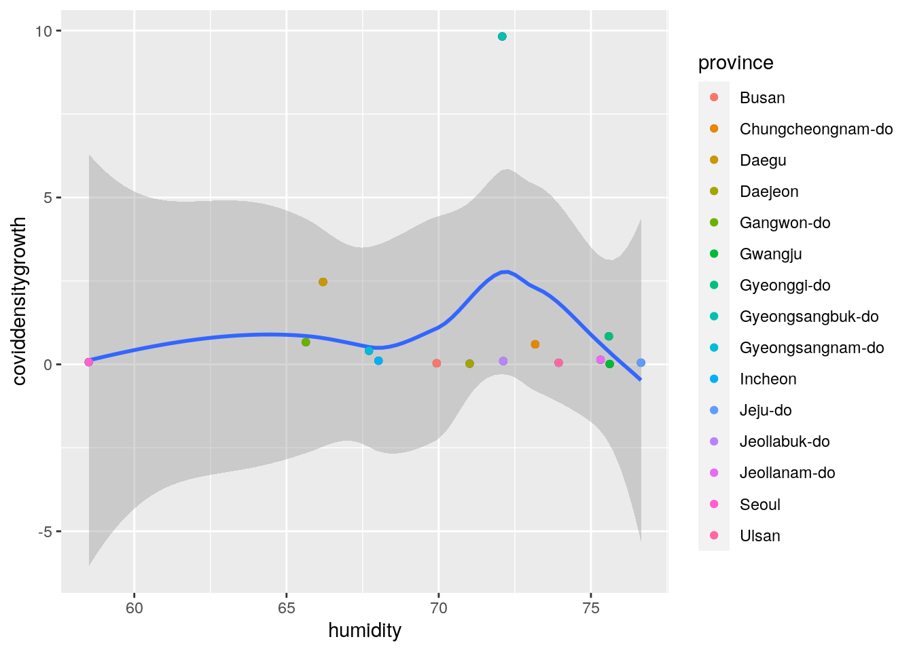
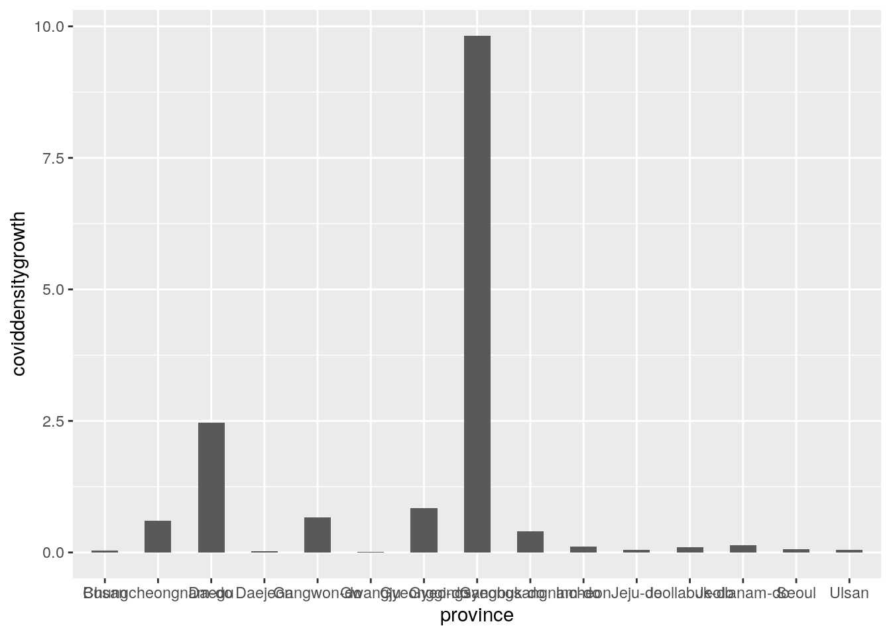

# For this project, I want to study the relationship between
# the humidity and the number of covid cases in Korea.
# Therefore, I have chosen the dataset containing the number
# of confirmed covid cases everyday from January 2020 to
# June2020 in each province of Korea and the dataset
# containing the weather record in each province of Korea.
# I'm going to calculate the average humidity of each
# province every month between January and June as one
# variable. For the other variable, first, I'm going to
# calculate the average of confirmed covid cases each month
# and divide the covid case average confirmed number by the
# population size to calculate the density of the covid
# confirmed cases. However, due to lack of source, I had to
# use the population census of Korea from 2015 instead of
# 2020. Thus the result conforms the assumption that Korea
# have similar population ratio in present days as of 2015.
# The result might have involved the confounding variable
# because the spread of cases don't solely depend on the
# humidity but also the size of the population in each
# province. Also the population in Korea has been expanding
# dramatically ever since 2015 so some of the covid to
# population ratio is larger than 1 because the covid case
# number is bigger than the population size in 2015.
# I will be left-joining the 'Weather'dataset to
# 'TimeProvince'dataset so that the dates in Weather dataset
# that 'TimeProvince' dataset doesn't have can be removed.
# 'Weather' dataset has 26271 observations(Weather) of 10
# different variables/columns(Korean provinces), and
# 'TimeProvince' dataset has 2771 observations of 6 different
# variables/columns(Korean provinces).
library(readr)
TimeProvince <- read_csv("TimeProvince.csv")
head(TimeProvince)## # A tibble: 6 x 6
## date time province confirmed released deceased
## <date> <dbl> <chr> <dbl> <dbl> <dbl>
## 1 2020-01-20 16 Seoul 0 0 0
## 2 2020-01-20 16 Busan 0 0 0
## 3 2020-01-20 16 Daegu 0 0 0
## 4 2020-01-20 16 Incheon 1 0 0
## 5 2020-01-20 16 Gwangju 0 0 0
## 6 2020-01-20 16 Daejeon 0 0 0library(readr)
Weather <- read_csv("Weather.csv")
head(Weather)## # A tibble: 6 x 10
## code province date avg_temp min_temp max_temp precipitation
## <dbl> <chr> <date> <dbl> <dbl> <dbl> <dbl>
## 1 10000 Seoul 2016-01-01 1.2 -3.3 4 0
## 2 11000 Busan 2016-01-01 5.3 1.1 10.9 0
## 3 12000 Daegu 2016-01-01 1.7 -4 8 0
## 4 13000 Gwangju 2016-01-01 3.2 -1.5 8.1 0
## 5 14000 Incheon 2016-01-01 3.1 -0.4 5.7 0
## 6 15000 Daejeon 2016-01-01 1.6 -4.2 7.7 0
## # … with 3 more variables: max_wind_speed <dbl>, most_wind_direction <dbl>,
## # avg_relative_humidity <dbl># Filter out the needed variables from the dataset
library(tidyverse)
TimeProvince %>% select(date, province, confirmed) %>% filter(!is.na(confirmed))## # A tibble: 2,771 x 3
## date province confirmed
## <date> <chr> <dbl>
## 1 2020-01-20 Seoul 0
## 2 2020-01-20 Busan 0
## 3 2020-01-20 Daegu 0
## 4 2020-01-20 Incheon 1
## 5 2020-01-20 Gwangju 0
## 6 2020-01-20 Daejeon 0
## 7 2020-01-20 Ulsan 0
## 8 2020-01-20 Sejong 0
## 9 2020-01-20 Gyeonggi-do 0
## 10 2020-01-20 Gangwon-do 0
## # … with 2,761 more rowsData1 <- TimeProvince %>% select(date, province, confirmed) %>%
filter(!is.na(confirmed))
Weather %>% select(province, date, avg_relative_humidity)## # A tibble: 26,271 x 3
## province date avg_relative_humidity
## <chr> <date> <dbl>
## 1 Seoul 2016-01-01 73
## 2 Busan 2016-01-01 52.1
## 3 Daegu 2016-01-01 70.5
## 4 Gwangju 2016-01-01 73.1
## 5 Incheon 2016-01-01 83.9
## 6 Daejeon 2016-01-01 77.4
## 7 Ulsan 2016-01-01 53.3
## 8 Gyeonggi-do 2016-01-01 80.1
## 9 Gangwon-do 2016-01-01 33
## 10 Chungcheongbuk-do 2016-01-01 79.4
## # … with 26,261 more rowsData2 <- Weather %>% select(province, date, avg_relative_humidity)# Joining two dataset by province of Korea
Data1 %>% left_join(Data2)## # A tibble: 2,771 x 4
## date province confirmed avg_relative_humidity
## <date> <chr> <dbl> <dbl>
## 1 2020-01-20 Seoul 0 46.8
## 2 2020-01-20 Busan 0 45.6
## 3 2020-01-20 Daegu 0 44.1
## 4 2020-01-20 Incheon 1 56
## 5 2020-01-20 Gwangju 0 63.1
## 6 2020-01-20 Daejeon 0 57.3
## 7 2020-01-20 Ulsan 0 48.5
## 8 2020-01-20 Sejong 0 NA
## 9 2020-01-20 Gyeonggi-do 0 68.5
## 10 2020-01-20 Gangwon-do 0 38.8
## # … with 2,761 more rowsdata <- Data1 %>% left_join(Data2)# check whether there is NAs and getting rid of NAs
data %>% summarize_all(function(x) mean(!is.na(x)))## # A tibble: 1 x 4
## date province confirmed avg_relative_humidity
## <dbl> <dbl> <dbl> <dbl>
## 1 1 1 1 0.925data %>% filter(!is.na(avg_relative_humidity))## # A tibble: 2,563 x 4
## date province confirmed avg_relative_humidity
## <date> <chr> <dbl> <dbl>
## 1 2020-01-20 Seoul 0 46.8
## 2 2020-01-20 Busan 0 45.6
## 3 2020-01-20 Daegu 0 44.1
## 4 2020-01-20 Incheon 1 56
## 5 2020-01-20 Gwangju 0 63.1
## 6 2020-01-20 Daejeon 0 57.3
## 7 2020-01-20 Ulsan 0 48.5
## 8 2020-01-20 Gyeonggi-do 0 68.5
## 9 2020-01-20 Gangwon-do 0 38.8
## 10 2020-01-20 Chungcheongbuk-do 0 63.3
## # … with 2,553 more rowsdata <- data %>% filter(!is.na(avg_relative_humidity))
# seaparte year, month, and day into different columns
data %>% separate(date, into = c("year", "month", "day")) %>%
filter(!is.na(avg_relative_humidity))## # A tibble: 2,563 x 6
## year month day province confirmed avg_relative_humidity
## <chr> <chr> <chr> <chr> <dbl> <dbl>
## 1 2020 01 20 Seoul 0 46.8
## 2 2020 01 20 Busan 0 45.6
## 3 2020 01 20 Daegu 0 44.1
## 4 2020 01 20 Incheon 1 56
## 5 2020 01 20 Gwangju 0 63.1
## 6 2020 01 20 Daejeon 0 57.3
## 7 2020 01 20 Ulsan 0 48.5
## 8 2020 01 20 Gyeonggi-do 0 68.5
## 9 2020 01 20 Gangwon-do 0 38.8
## 10 2020 01 20 Chungcheongbuk-do 0 63.3
## # … with 2,553 more rowsdata <- data %>% separate(date, into = c("year", "month", "day")) %>%
filter(!is.na(avg_relative_humidity))# importing the dataset containig Korean population census
# 2015
library(readr)
Population_density_by_Population_Census_20201020052447 <- read_csv("Population_density_by_Population_Census_20201020052447.csv")
# upload popuplation census of Korea and select the data from
# the most recent year
Population_density_by_Population_Census_20201020052447 %>% select(1,
4)## # A tibble: 18 x 2
## `By administrative divisions` `2015`
## <chr> <dbl>
## 1 Whole country 509.
## 2 Seoul 16364
## 3 Busan 4480.
## 4 Daegu 2791
## 5 Incheon 2756.
## 6 Gwangju 2999.
## 7 Daejeon 2852.
## 8 Ulsan 1100.
## 9 Sejong-si 439
## 10 Gyeonggi-do 1226.
## 11 Gangwon-do 90.2
## 12 Chungcheongbuk-do 215.
## 13 Chungcheongnam-do 257.
## 14 Jeollabuk-do 227.
## 15 Jeollanam-do 146.
## 16 Gyeongsangbuk-do 141.
## 17 Gyeongsangnam-do 316.
## 18 Jeju-do 328.population_15 <- Population_density_by_Population_Census_20201020052447 %>%
select(1, 4)
# rename the columns to make the joining easier and
# distinguish
population_15 <- rename(population_15, province = 1)
population_15 <- rename(population_15, pop15 = 2)
# joining
data %>% left_join(population_15)## # A tibble: 2,563 x 7
## year month day province confirmed avg_relative_humidity pop15
## <chr> <chr> <chr> <chr> <dbl> <dbl> <dbl>
## 1 2020 01 20 Seoul 0 46.8 16364
## 2 2020 01 20 Busan 0 45.6 4480.
## 3 2020 01 20 Daegu 0 44.1 2791
## 4 2020 01 20 Incheon 1 56 2756.
## 5 2020 01 20 Gwangju 0 63.1 2999.
## 6 2020 01 20 Daejeon 0 57.3 2852.
## 7 2020 01 20 Ulsan 0 48.5 1100.
## 8 2020 01 20 Gyeonggi-do 0 68.5 1226.
## 9 2020 01 20 Gangwon-do 0 38.8 90.2
## 10 2020 01 20 Chungcheongbuk-do 0 63.3 215.
## # … with 2,553 more rowsdata <- data %>% left_join(population_15)# drop unecessary columns
data %>% select(month, province, confirmed, avg_relative_humidity,
pop15)## # A tibble: 2,563 x 5
## month province confirmed avg_relative_humidity pop15
## <chr> <chr> <dbl> <dbl> <dbl>
## 1 01 Seoul 0 46.8 16364
## 2 01 Busan 0 45.6 4480.
## 3 01 Daegu 0 44.1 2791
## 4 01 Incheon 1 56 2756.
## 5 01 Gwangju 0 63.1 2999.
## 6 01 Daejeon 0 57.3 2852.
## 7 01 Ulsan 0 48.5 1100.
## 8 01 Gyeonggi-do 0 68.5 1226.
## 9 01 Gangwon-do 0 38.8 90.2
## 10 01 Chungcheongbuk-do 0 63.3 215.
## # … with 2,553 more rowsdata <- data %>% select(month, province, confirmed, avg_relative_humidity,
pop15)
# calculate the average number of confirmed cases and the
# average of the humidity each month.
data %>% group_by(month, province) %>% summarize(province, covid_mean = mean(confirmed),
humidity_mean = mean(avg_relative_humidity), pop15) %>% distinct() %>%
arrange(province)## # A tibble: 95 x 5
## # Groups: month, province [95]
## month province covid_mean humidity_mean pop15
## <chr> <chr> <dbl> <dbl> <dbl>
## 1 01 Busan 0 66.6 4480.
## 2 02 Busan 13.3 55.1 4480.
## 3 03 Busan 103. 56.9 4480.
## 4 04 Busan 129. 52.6 4480.
## 5 05 Busan 142. 72.5 4480.
## 6 06 Busan 149. 73.3 4480.
## 7 01 Chungcheongbuk-do 0 68.8 215.
## 8 02 Chungcheongbuk-do 1.62 68.8 215.
## 9 03 Chungcheongbuk-do 28.9 57.8 215.
## 10 04 Chungcheongbuk-do 44.9 50.7 215.
## # … with 85 more rowsdata <- data %>% group_by(month, province) %>% summarize(province,
covid_mean = mean(confirmed), humidity_mean = mean(avg_relative_humidity),
pop15) %>% distinct() %>% arrange(province)# caculate the ratio for number of covid cases to population.
# covid patient density in each province.
data %>% mutate(covid_density = covid_mean/pop15)## # A tibble: 95 x 6
## # Groups: month, province [95]
## month province covid_mean humidity_mean pop15 covid_density
## <chr> <chr> <dbl> <dbl> <dbl> <dbl>
## 1 01 Busan 0 66.6 4480. 0
## 2 02 Busan 13.3 55.1 4480. 0.00297
## 3 03 Busan 103. 56.9 4480. 0.0231
## 4 04 Busan 129. 52.6 4480. 0.0288
## 5 05 Busan 142. 72.5 4480. 0.0318
## 6 06 Busan 149. 73.3 4480. 0.0332
## 7 01 Chungcheongbuk-do 0 68.8 215. 0
## 8 02 Chungcheongbuk-do 1.62 68.8 215. 0.00755
## 9 03 Chungcheongbuk-do 28.9 57.8 215. 0.135
## 10 04 Chungcheongbuk-do 44.9 50.7 215. 0.209
## # … with 85 more rowsdata <- data %>% mutate(covid_density = covid_mean/pop15)# get ride of chungcheongbukdo because it doesnt have a data
# for june
data %>% filter(!province == "Chungcheongbuk-do") %>% select(month,
province, humidity_mean, covid_density) %>% filter(month ==
"01" | month == "06")## # A tibble: 30 x 4
## # Groups: month, province [30]
## month province humidity_mean covid_density
## <chr> <chr> <dbl> <dbl>
## 1 01 Busan 66.6 0
## 2 06 Busan 73.3 0.0332
## 3 01 Chungcheongnam-do 68.7 0
## 4 06 Chungcheongnam-do 77.7 0.601
## 5 01 Daegu 69.6 0
## 6 06 Daegu 62.8 2.47
## 7 01 Daejeon 66.9 0
## 8 06 Daejeon 75.1 0.0225
## 9 01 Gangwon-do 65.8 0
## 10 06 Gangwon-do 65.5 0.666
## # … with 20 more rowsdata <- data %>% filter(!province == "Chungcheongbuk-do") %>%
select(month, province, humidity_mean, covid_density) %>%
filter(month == "01" | month == "06")# pivoting wider/tidying
data %>% pivot_wider(names_from = "month", values_from = c(humidity_mean,
covid_density))## # A tibble: 15 x 5
## # Groups: province [15]
## province humidity_mean_01 humidity_mean_06 covid_density_01 covid_density_06
## <chr> <dbl> <dbl> <dbl> <dbl>
## 1 Busan 66.6 73.3 0 0.0332
## 2 Chungche… 68.7 77.7 0 0.601
## 3 Daegu 69.6 62.8 0 2.47
## 4 Daejeon 66.9 75.1 0 0.0225
## 5 Gangwon-… 65.8 65.5 0 0.666
## 6 Gwangju 72.5 78.7 0 0.0109
## 7 Gyeonggi… 74.6 76.6 0.00122 0.843
## 8 Gyeongsa… 72.2 72.0 0 9.83
## 9 Gyeongsa… 65.0 70.5 0 0.407
## 10 Incheon 59.5 76.6 0.000363 0.110
## 11 Jeju-do 70.1 83.2 0 0.0506
## 12 Jeollabu… 70.4 73.8 0.000366 0.0984
## 13 Jeollana… 70.5 80.1 0 0.139
## 14 Seoul 50.2 66.9 0.0000509 0.0675
## 15 Ulsan 73.0 74.9 0 0.0484data <- data %>% pivot_wider(names_from = "month", values_from = c(humidity_mean,
covid_density))# rename for organization purpose
data <- rename(data, coviddensity1 = 4)
data <- rename(data, coviddensity6 = 5)
data <- rename(data, humidity1 = 2)
data <- rename(data, humidity6 = 3)data %>% mutate(humidity = (humidity1 + humidity6)/2, coviddensitygrowth = coviddensity6 -
coviddensity1)## # A tibble: 15 x 7
## # Groups: province [15]
## province humidity1 humidity6 coviddensity1 coviddensity6 humidity
## <chr> <dbl> <dbl> <dbl> <dbl> <dbl>
## 1 Busan 66.6 73.3 0 0.0332 69.9
## 2 Chungch… 68.7 77.7 0 0.601 73.2
## 3 Daegu 69.6 62.8 0 2.47 66.2
## 4 Daejeon 66.9 75.1 0 0.0225 71.0
## 5 Gangwon… 65.8 65.5 0 0.666 65.6
## 6 Gwangju 72.5 78.7 0 0.0109 75.6
## 7 Gyeongg… 74.6 76.6 0.00122 0.843 75.6
## 8 Gyeongs… 72.2 72.0 0 9.83 72.1
## 9 Gyeongs… 65.0 70.5 0 0.407 67.7
## 10 Incheon 59.5 76.6 0.000363 0.110 68.0
## 11 Jeju-do 70.1 83.2 0 0.0506 76.6
## 12 Jeollab… 70.4 73.8 0.000366 0.0984 72.1
## 13 Jeollan… 70.5 80.1 0 0.139 75.3
## 14 Seoul 50.2 66.9 0.0000509 0.0675 58.5
## 15 Ulsan 73.0 74.9 0 0.0484 73.9
## # … with 1 more variable: coviddensitygrowth <dbl>data <- data %>% mutate(humidity = (humidity1 + humidity6)/2,
coviddensitygrowth = coviddensity6 - coviddensity1)
data %>% left_join(population_15)## # A tibble: 15 x 8
## # Groups: province [15]
## province humidity1 humidity6 coviddensity1 coviddensity6 humidity
## <chr> <dbl> <dbl> <dbl> <dbl> <dbl>
## 1 Busan 66.6 73.3 0 0.0332 69.9
## 2 Chungch… 68.7 77.7 0 0.601 73.2
## 3 Daegu 69.6 62.8 0 2.47 66.2
## 4 Daejeon 66.9 75.1 0 0.0225 71.0
## 5 Gangwon… 65.8 65.5 0 0.666 65.6
## 6 Gwangju 72.5 78.7 0 0.0109 75.6
## 7 Gyeongg… 74.6 76.6 0.00122 0.843 75.6
## 8 Gyeongs… 72.2 72.0 0 9.83 72.1
## 9 Gyeongs… 65.0 70.5 0 0.407 67.7
## 10 Incheon 59.5 76.6 0.000363 0.110 68.0
## 11 Jeju-do 70.1 83.2 0 0.0506 76.6
## 12 Jeollab… 70.4 73.8 0.000366 0.0984 72.1
## 13 Jeollan… 70.5 80.1 0 0.139 75.3
## 14 Seoul 50.2 66.9 0.0000509 0.0675 58.5
## 15 Ulsan 73.0 74.9 0 0.0484 73.9
## # … with 2 more variables: coviddensitygrowth <dbl>, pop15 <dbl>data <- data %>% left_join(population_15)
data %>% select(province, pop15, humidity, coviddensitygrowth)## # A tibble: 15 x 4
## # Groups: province [15]
## province pop15 humidity coviddensitygrowth
## <chr> <dbl> <dbl> <dbl>
## 1 Busan 4480. 69.9 0.0332
## 2 Chungcheongnam-do 257. 73.2 0.601
## 3 Daegu 2791 66.2 2.47
## 4 Daejeon 2852. 71.0 0.0225
## 5 Gangwon-do 90.2 65.6 0.666
## 6 Gwangju 2999. 75.6 0.0109
## 7 Gyeonggi-do 1226. 75.6 0.842
## 8 Gyeongsangbuk-do 141. 72.1 9.83
## 9 Gyeongsangnam-do 316. 67.7 0.407
## 10 Incheon 2756. 68.0 0.110
## 11 Jeju-do 328. 76.6 0.0506
## 12 Jeollabuk-do 227. 72.1 0.0980
## 13 Jeollanam-do 146. 75.3 0.139
## 14 Seoul 16364 58.5 0.0675
## 15 Ulsan 1100. 73.9 0.0484data <- data %>% select(province, pop15, humidity, coviddensitygrowth)# scatterplot
data %>% ggplot(aes(humidity, coviddensitygrowth)) + geom_point() +
geom_smooth(method = NULL) + geom_point(aes(color = province))
# bargraph
data %>% ggplot(aes(x = province, y = coviddensitygrowth)) +
geom_bar(stat = "identity", width = 0.5)